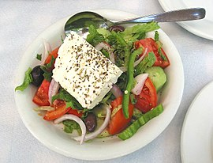

Ελληνική παραδοσιακή κουζίνα

Αρχική|
Κυκλαδίτικη κουζίνα |
Μακεδονική κουζίνα |
Eπτανησιακη κουζινα |
Θρακική κουζίνα |
Ηπειρωτική κουζίνα|
Κρητική κουζίνα|
Η κουζίνα της Θεσσαλίας|
Φαγητά από όλη την Ελλάδα
- Κυκλαδίτικη κουζίνα
- Μακεδονική κουζίνα
- Eπτανησιακη κουζινα
- Θρακική κουζίνα
- Κουζίνα του Αιγαίου
- Ηπειρωτική κουζίνα
- Kρητικη κουζινα
- Η κουζίνα της Θεσσαλίας